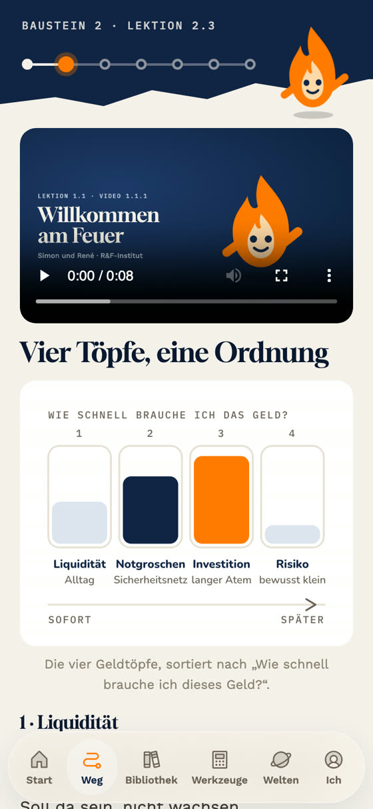
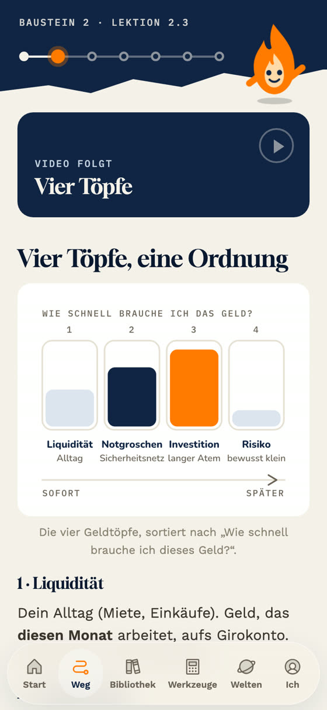
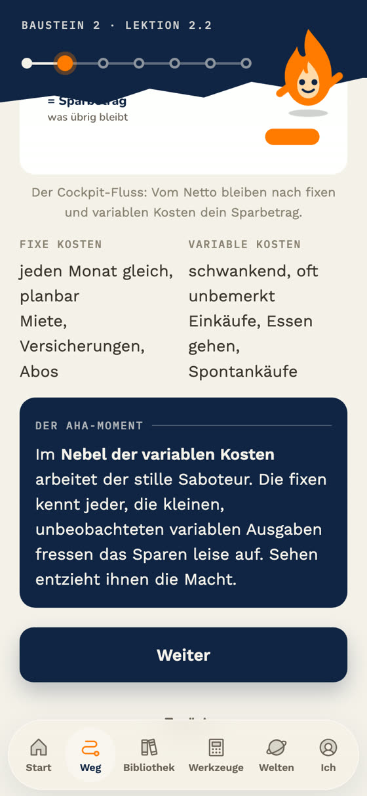
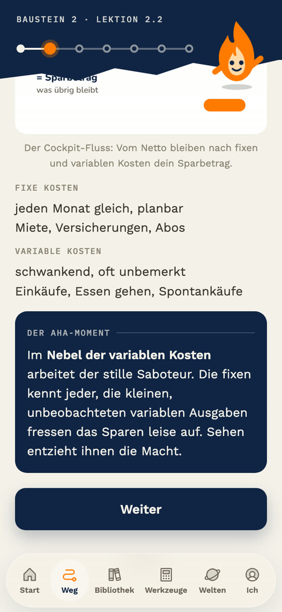
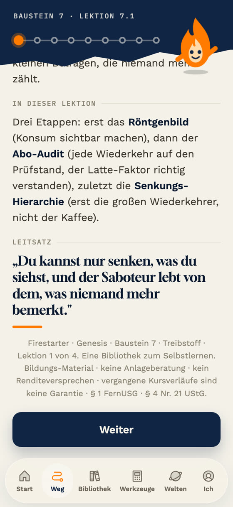
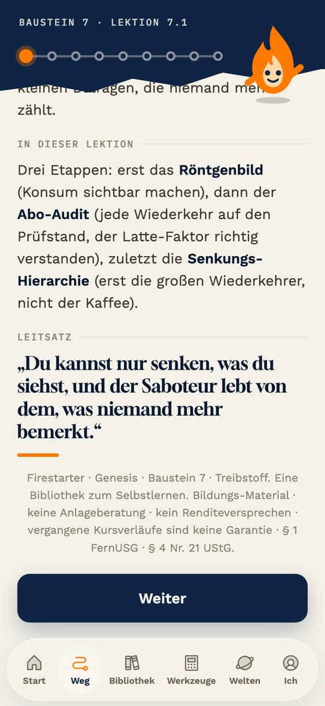
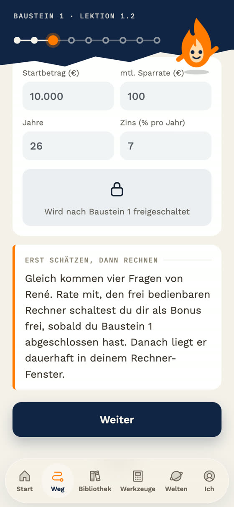
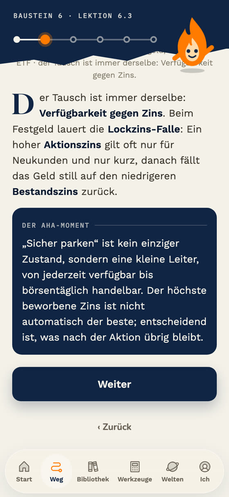
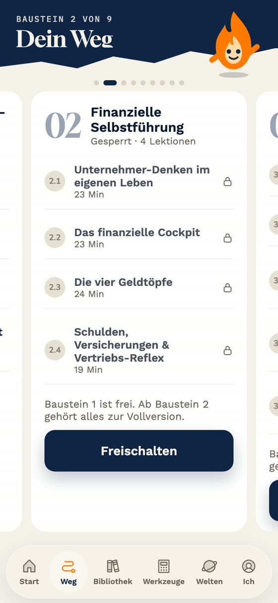

Was noch offen ist, im Bild
Links das Ist in der App, rechts das Danach aus einer Vorschau-Kopie. Die echte App ist noch unverändert. Antwort reicht als Nummern, zum Beispiel „A1, A4, A6 ja“.
A1 · Jedes Video zeigt „Willkommen am Feuer · Lektion 1.1“
Alle 77 Video-Schritte zeigen dasselbe Beispielvideo aus Lektion 1.1, hier in Lektion 2.3. Danach: eine ruhige Karte „Video folgt“ mit dem Titel des richtigen Videos, bis Renés Videos da sind. Lektion 1.1 behält das Beispielvideo.


A4 · Zwei schmale Textspalten
Zwei Spalten nebeneinander werden am Handy eng. Betrifft 32 Schritte in fast allen Bausteinen, hier 2.2. Danach: untereinander, Inhalt gleich.


A5 · „Lektion 1 von 4“ in der Fußzeile
Am Ende jedes Auftakts (20 Stellen) steht eine Zählung, wie früher „Schritt 1 von 9“. Danach: Zählung weg, der Rest bleibt. Darin steht auch „Genesis“, siehe unten.


A6 · Schloss als Emoji, Stern in der Abschlussmeldung
In Lektion 1.2 steht ein Schloss-Emoji im Rechner. Danach: ein gezeichnetes Schloss in der App-Linie. Der Stern steht in 3 Abschlussmeldungen am Lektionsende.

A7 · Anführungszeichen
335 Stellen öffnen mit „ und schließen mit einem geraden Zeichen ". Danach: überall „…“. Kein Wort ändert sich. Am deutlichsten am Leitsatz-Ende in A5 oben und hier bei „Sicher parken“.

Frage · „Genesis“
50 Stellen nennen „Genesis“, ohne dass der Name eingeführt ist, etwa in der Fußzeile oben („Firestarter · Genesis · Baustein 7“) und in Lektion 1.5 („Wenn du Genesis abgeschlossen hast …“).
Frage · Stripe-Link
Ab Baustein 2 steht für alle außer Simon, René und Stefan „Freischalten“. Der Knopf zeigt bisher nur einen Hinweis, weil der Bezahl-Link fehlt.
